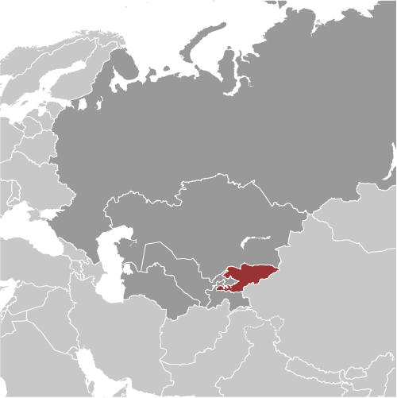
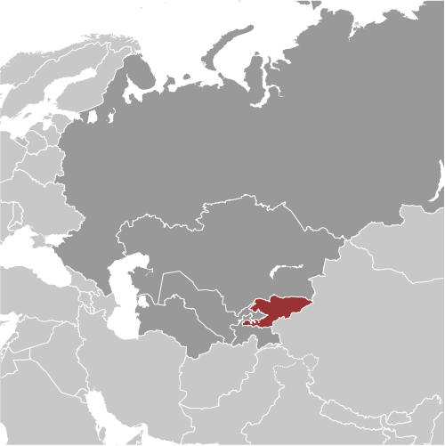

Central Asia :: KYRGYZSTAN
Introduction :: KYRGYZSTAN
-
A Central Asian country of incredible natural beauty and proud nomadic traditions, most of the territory of present-day Kyrgyzstan was formally annexed to the Russian Empire in 1876. The Kyrgyz staged a major revolt against the Tsarist Empire in 1916 in which almost one-sixth of the Kyrgyz population was killed. Kyrgyzstan became a Soviet republic in 1936 and achieved independence in 1991 when the USSR dissolved. Nationwide demonstrations in the spring of 2005 resulted in the ouster of President Askar AKAEV, who had run the country since 1990. Former Prime Minister Kurmanbek BAKIEV overwhelmingly won the presidential election in the summer of 2005. Over the next few years, he manipulated the parliament to accrue new powers for the presidency. In July 2009, after months of harassment against his opponents and media critics, BAKIEV won reelection in a presidential campaign that the international community deemed flawed. In April 2010, violent protests in Bishkek led to the collapse of the BAKIEV regime and his eventual flight to Minsk, Belarus. His successor, Roza OTUNBAEVA, served as transitional president until Almazbek ATAMBAEV was inaugurated in December 2011, marking the first peaceful transfer of presidential power in independent Kyrgyzstan's history. Continuing concerns include: the trajectory of democratization, endemic corruption, poor interethnic relations, border security vulnerabilities, and potential terrorist threats.Under the 2010 Constitution, ATAMBAEV is limited to one term, which will end in 2017. Constitutional amendments passed in a referendum in December 2016 include language that transfers some presidential powers to the prime minister. Disagreement over the constitutional amendments compelled ATAMBAEV’s Social Democratic Party of Kyrgyzstan to dissolve the ruling coalition and create a new majority coalition in the Jogorku Kenesh that excluded opposition parties critical of the amendments.
Geography :: KYRGYZSTAN
-
Central Asia, west of China, south of Kazakhstan41 00 N, 75 00 EAsiatotal: 199,951 sq kmland: 191,801 sq kmwater: 8,150 sq kmcountry comparison to the world: 88slightly smaller than South Dakotatotal: 4,573 kmborder countries (4): China 1,063 km, Kazakhstan 1,212 km, Tajikistan 984 km, Uzbekistan 1,314 km0 km (landlocked)none (landlocked)dry continental to polar in high Tien Shan Mountains; subtropical in southwest (Fergana Valley); temperate in northern foothill zonepeaks of the Tien Shan mountain range and associated valleys and basins encompass the entire countrymean elevation: 2,988 melevation extremes: lowest point: Kara-Daryya (Karadar'ya) 132 mhighest point: Jengish Chokusu (Pik Pobedy) 7,439 mabundant hydropower; gold, rare earth metals; locally exploitable coal, oil, and natural gas; other deposits of nepheline, mercury, bismuth, lead, and zincagricultural land: 55.4%arable land 6.7%; permanent crops 0.4%; permanent pasture 48.3%forest: 5.1%other: 39.5% (2011 est.)10,233 sq km (2012)the vast majority of Kyrgyzstanis live in rural areas; densest population settlement is to the north in and around the capital, Bishkek, followed by Osh in the west; the least densely populated area is the east, southeast in the Tien Shan mountainsmajor flooding during snow melt; prone to earthquakeswater pollution; many people get their water directly from contaminated streams and wells; as a result, water-borne diseases are prevalent; increasing soil salinity from faulty irrigation practicesparty to: Air Pollution, Biodiversity, Climate Change, Climate Change-Kyoto Protocol, Desertification, Hazardous Wastes, Ozone Layer Protection, Wetlandssigned, but not ratified: none of the selected agreementslandlocked; entirely mountainous, dominated by the Tien Shan range; 94% of the country is 1,000 m above sea level with an average elevation of 2,750 m; many tall peaks, glaciers, and high-altitude lakes
People and Society :: KYRGYZSTAN
-
5,789,122 (July 2017 est.)country comparison to the world: 114noun: Kyrgyzstani(s)adjective: KyrgyzstaniKyrgyz 70.9%, Uzbek 14.3%, Russian 7.7%, Dungan 1.1%, other 5.9% (includes Uyghur, Tajik, Turk, Kazakh, Tatar, Ukrainian, Korean, German) (2009 est.)Kyrgyz (official) 71.4%, Uzbek 14.4%, Russian (official) 9%, other 5.2% (2009 est.)Muslim 75%, Russian Orthodox 20%, other 5%0-14 years: 30.3% (male 899,545/female 854,745)15-24 years: 16.79% (male 493,924/female 478,217)25-54 years: 39.84% (male 1,130,422/female 1,175,729)55-64 years: 7.8% (male 196,856/female 254,694)65 years and over: 5.27% (male 116,584/female 188,406) (2017 est.)total dependency ratio: 54.7youth dependency ratio: 48.1elderly dependency ratio: 6.6potential support ratio: 15.1 (2015 est.)total: 26.5 yearsmale: 25.4 yearsfemale: 27.6 years (2017 est.)country comparison to the world: 1481.05% (2017 est.)country comparison to the world: 10722.1 births/1,000 population (2017 est.)country comparison to the world: 726.5 deaths/1,000 population (2017 est.)country comparison to the world: 143-5.1 migrant(s)/1,000 population (2017 est.)country comparison to the world: 193the vast majority of Kyrgyzstanis live in rural areas; densest population settlement is to the north in and around the capital, Bishkek, followed by Osh in the west; the least densely populated area is the east, southeast in the Tien Shan mountainsurban population: 36% of total population (2017)rate of urbanization: 2.04% annual rate of change (2015-20 est.)BISHKEK (capital) 865,000 (2015)at birth: 1.07 male(s)/female0-14 years: 1.05 male(s)/female15-24 years: 1.03 male(s)/female25-54 years: 0.96 male(s)/female55-64 years: 0.77 male(s)/female65 years and over: 0.62 male(s)/femaletotal population: 0.96 male(s)/female (2016 est.)23.2 years (2014 est.)76 deaths/100,000 live births (2015 est.)country comparison to the world: 82total: 25.9 deaths/1,000 live birthsmale: 30 deaths/1,000 live birthsfemale: 21.5 deaths/1,000 live births (2017 est.)country comparison to the world: 68total population: 70.9 yearsmale: 66.8 yearsfemale: 75.4 years (2017 est.)country comparison to the world: 1562.61 children born/woman (2017 est.)country comparison to the world: 7642% (2014)6.5% of GDP (2014)country comparison to the world: 911.85 physicians/1,000 population (2014)4.8 beds/1,000 population (2012)improved:urban: 96.7% of populationrural: 86.2% of populationtotal: 90% of populationunimproved:urban: 3.3% of populationrural: 13.8% of populationtotal: 10% of population (2015 est.)improved:urban: 89.1% of populationrural: 95.6% of populationtotal: 93.3% of populationunimproved:urban: 10.9% of populationrural: 4.4% of populationtotal: 6.7% of population (2015 est.)0.2% (2016 est.)country comparison to the world: 918,500 (2016 est.)country comparison to the world: 100<500 (2016 est.)16.6% (2016)country comparison to the world: 1212.8% (2014)country comparison to the world: 1015.5% of GDP (2014)country comparison to the world: 25definition: age 15 and over can read and writetotal population: 99.5%male: 99.6%female: 99.4% (2015 est.)total: 13 yearsmale: 13 yearsfemale: 13 years (2014)total: 15%male: 12.5%female: 19.1% (2015 est.)country comparison to the world: 80
Government :: KYRGYZSTAN
-
conventional long form: Kyrgyz Republicconventional short form: Kyrgyzstanlocal long form: Kyrgyz Respublikasylocal short form: Kyrgyzstanformer: Kirghiz Soviet Socialist Republicetymology: a combination of the Turkic words "kyrg" (forty) and "-yz" (tribes) with the Persian suffix "-stan" (country) creating the meaning "Land of the Forty Tribes"; the name refers to the forty clans united by the legendary Kyrgyz hero, MANASparliamentary republicname: Bishkekgeographic coordinates: 42 52 N, 74 36 Etime difference: UTC+6 (11 hours ahead of Washington, DC, during Standard Time)7 provinces (oblustar, singular - oblus) and 2 cities* (shaarlar, singular - shaar); Batken Oblusu, Bishkek Shaary*, Chuy Oblusu (Bishkek), Jalal-Abad Oblusu, Naryn Oblusu, Osh Oblusu, Osh Shaary*, Talas Oblusu, Ysyk-Kol Oblusu (Karakol)note: administrative divisions have the same names as their administrative centers (exceptions have the administrative center name following in parentheses)31 August 1991 (from the Soviet Union)Independence Day, 31 August (1991)history: previous 1993; latest adopted by referendum 27 June 2010, effective 2 July 2010; note - the current constitution prohibits any change until 2020amendments: proposed as a draft law by the majority of the Supreme Council membership or by petition of 300,000 voters; passage requires at least two-thirds majority vote of the Council membership in each of at least three readings of the draft two months apart; the draft may be submitted to a referendum if approved by two-thirds of the Council membership; adoption requires the signature of the president; amended 2017 (2017)civil law system, which includes features of French civil law and Russian Federation lawshas not submitted an ICJ jurisdiction declaration; non-party state to the ICCtcitizenship by birth: nocitizenship by descent only: at least one parent must be a citizen of Kyrgyzstandual citizenship recognized: yes, but only if a mutual treaty on dual citizenship is in forceresidency requirement for naturalization: 5 years18 years of age; universalchief of state: President Almazbek ATAMBAEV (since 1 December 2011)head of government: Prime Minister Sapar ISAKOV (since 26 August 2017)cabinet: Cabinet of Ministers proposed by the prime minister, appointed by the president; defense and security committee chairs appointed by the presidentelections/appointments: president directly elected by absolute majority popular vote in 2 rounds if needed for a single 6-year term; election last held on 15 October 2017 (next to be held in October 2023); prime minister nominated by the majority party or majority coalition in the Supreme Council, appointed by the presidentelection results: Sooronbay JEENBEKOV elected president in first round; percent of vote - Sooronbay JEENBEKOV (SDPK) 54.3%, Omurbek BABANOV (independent) 33.4%, Adakhan MADUMAROV (United Kyrgyzstan) 6.4%, Temir SARIYEV (Akshumar) 2.5%, other 3.4%; note - Sooronbay JEENBEKOV's inauguration is scheduled for 4 December 2017; Sapar ISAKOV elected prime minister; Supreme Council vote - 97 to 5description: unicameral Supreme Council or Jogorku Kenesh (120 seats; members directly elected in a single nationwide constituency by proportional representation vote to serve 5-year terms)elections: last held on 4 October 2015 (next to be held in 2020)election results: percent of vote by party - SDPK 27.4%, Respublika-Ata-Jurt 20.1%, Kyrgyzstan Party 12.9%, Onuguu-Progress 9.3%, Bir Bol 8.5%, Ata-Meken 7.7%, other 14.1%; seats by party - SDPK 38, Respublika-Ata-Jurt 28, Kyrgyzstan Party 18, Onuguu-Progress 13, Bir Bol 12, Ata-Meken 11highest court(s): Supreme Court (consists of 25 judges); Constitutional Chamber of the Supreme Court (consists of the chairperson, deputy chairperson, and 9 judges)judge selection and term of office: Supreme Court and Constitutional Court judges appointed by the Supreme Council on the recommendation of the president; Supreme Court judges serve for 10 years, Constitutional Court judges serve for 15 years; mandatory retirement at age 70 for judges of both courtssubordinate courts: Higher Court of Arbitration; oblast (provincial) and city courtsAkshumkar (White Falcon) [Temir SARIYEV]Ata-Jurt (Homeland) [Kamchybek TASHIEV]Ata-Meken (Fatherland) [Omurbek TEKEBAEV]Bir Bol (Stay United) [Altynbek SULAIMANOV]Kyrgyzstan Party [Almazbek BATYRBEKOV]Onuguu-Progress [Bakyt TOROBAEV]Respublika (Republic) [Omurbek BABANOV]Respublika-Ata-Jurt (Republic-Homeland) [Omurbek BABANOV] (parliamentary faction)Social-Democratic Party of Kyrgyzstan or SDPK [Isa OMURKULOV]United Kyrgyzstan [Adakhan MADUMAROV]Adilet (Justice) Legal Clinic [Cholpon JAKUPOVA]Bir Duino [Tolekan ISMAILOVA] (formerly Citizens Against Corruption)Coalition for Democracy and Civil Society [Azamat ADILOV]Kylym Shamy (Torch of the Century) [Aziza ABDIRASULOVA] (human rights)Precedent Partnership Group [Nurbek TOKTAKUNOV]Societal Analysis Public Association [Rita KARASARTOVA]ADB, CICA, CIS, CSTO, EAEC, EAEU, EAPC, EBRD, ECO, EITI (compliant country), FAO, GCTU, IAEA, IBRD, ICAO, ICC (NGOs), ICRM, IDA, IDB, IFAD, IFC, IFRCS, ILO, IMF, Interpol, IOC, IOM, IPU, ISO (correspondent), ITSO, ITU, MIGA, NAM (observer), OIC, OPCW, OSCE, PCA, PFP, SCO, UN, UNAMID, UNCTAD, UNESCO, UNIDO, UNISFA, UNMIL, UNMISS, UNWTO, UPU, WCO, WFTU (NGOs), WHO, WIPO, WMO, WTOchief of mission: Ambassador Kadyr TOKTOGULOV (since 23 February 2015)chancery: 2360 Massachusetts Ave. NW, Washington, DC 20008telephone: [1] (202) 449-9822FAX: [1] (202) 449-8275consulate(s): New Yorkchief of mission: Ambassador (vacant); Charge d'Affaires Alan MELTZER (since August 2017)embassy: 171 Prospect Mira, Bishkek 720016mailing address: use embassy street addresstelephone: [996] (312) 597-000FAX: [996] (312) 597-744red field with a yellow sun in the center having 40 rays representing the 40 Kyrgyz tribes; on the obverse side the rays run counterclockwise, on the reverse, clockwise; in the center of the sun is a red ring crossed by two sets of three lines, a stylized representation of a "tunduk" - the crown of a traditional Kyrgyz yurt; red symbolizes bravery and valor, the sun evinces peace and wealthgyrfalcon; national colors: red, yellowname: "Kyrgyz Respublikasynyn Mamlekettik Gimni" (National Anthem of the Kyrgyz Republic)lyrics/music: Djamil SADYKOV and Eshmambet KULUEV/Nasyr DAVLESOV and Kalyi MOLDOBASANOVnote: adopted 1992
Economy :: KYRGYZSTAN
-
Kyrgyzstan is a landlocked, mountainous, lower middle income country with an economy dominated by minerals extraction, agriculture, and reliance on remittances from citizens working abroad. Cotton, wool, and meat are the main agricultural products, although only cotton is exported in any quantity. Other exports include gold, mercury, uranium, natural gas, and - in some years - electricity. The country has sought to attract foreign investment to expand its export base, including construction of hydroelectric dams, but a difficult investment climate and an ongoing legal battle with a Canadian firm over the joint ownership structure of the nation’s largest gold mine deter potential investors. Remittances from Kyrgyz migrant workers, predominantly in Russia and Kazakhstan, are equivalent to over one-quarter of Kyrgyzstan’s GDP.Following independence, Kyrgyzstan rapidly implemented market reforms, such as improving the regulatory system and instituting land reform. In 1998, Kyrgyzstan was the first Commonwealth of Independent States country to be accepted into the World Trade Organization. The government has privatized much of its ownership shares in public enterprises. Despite these reforms, the country suffered a severe drop in production in the early 1990s and has again faced slow growth in recent years as the global financial crisis, declining oil prices, and regional economic headwinds have damaged economies across Central Asia. The Kyrgyz government remains dependent on foreign donor support to finance its annual budget deficit of approximately 4 to 5% of GDP.Kyrgyz leaders hope the country’s August 2015 accession to the Eurasian Economic Union (EAEU) will bolster trade and investment, but slowing economies in Russia and China and low commodity prices continue to hamper economic growth. While joining the EAEU has increased Kyrgyz labor mobility within member states, large-scale trade and investment pledged by Kyrgyz leaders has been slow in developing since accession. Kyrgyz entrepreneurs and politicians alike often contend that non-tariff measures imposed by other EAEU member states, particularly Kazakhstan, are negatively impacting sectors of the Kyrgyz economy that enjoy a comparative advantage, such as meat and dairy production. Since acceding to the EAEU, the Kyrgyz Republic has continued harmonizing its laws and regulations to conform to EAEU standards, though many local entrepreneurs have criticized this process as disjointed and incomplete. The keys to future growth include progress in fighting corruption, improving administrative transparency, restructuring and diversifying domestic industries, and attracting foreign aid and investment.$21.5 billion (2016 est.)$20.46 billion (2015 est.)$19.56 billion (2014 est.)note: data are in 2016 dollarscountry comparison to the world: 142$6.551 billion (2016 est.)3.8% (2016 est.)3.5% (2015 est.)4% (2014 est.)country comparison to the world: 71$3,500 (2016 est.)$3,400 (2015 est.)$3,400 (2014 est.)note: data are in 2016 dollarscountry comparison to the world: 18323.8% of GDP (2016 est.)18.3% of GDP (2015 est.)20.4% of GDP (2014 est.)country comparison to the world: 62household consumption: 81.5%government consumption: 18.2%investment in fixed capital: 31%investment in inventories: 3.5%exports of goods and services: 35.4%imports of goods and services: -69.6% (2016 est.)agriculture: 14.9%industry: 29.2%services: 55.9% (2016 est.)cotton, potatoes, vegetables, grapes, fruits and berries; sheep, goats, cattle, woolsmall machinery, textiles, food processing, cement, shoes, lumber, refrigerators, furniture, electric motors, gold, rare earth metals5.9% (2016 est.)country comparison to the world: 362.787 million (2016 est.)country comparison to the world: 107agriculture: 48%industry: 12.5%services: 39.5% (2005 est.)7.5% (2016 est.)7.6% (2015 est.)country comparison to the world: 9632.1% (2015 est.)lowest 10%: 4.4%highest 10%: 22.9% (2014 est.)33.4 (2007)29 (2001)country comparison to the world: 107revenues: $1.868 billionexpenditures: $2.166 billion (2016 est.)28.5% of GDP (2016 est.)country comparison to the world: 92-4.6% of GDP (2016 est.)country comparison to the world: 15358.5% of GDP (2016 est.)64.9% of GDP (2015 est.)country comparison to the world: 78calendar year0.4% (2016 est.)6.5% (2015 est.)country comparison to the world: 645% (31 December 2016)8% (31 December 2015)country comparison to the world: 7922.23% (31 December 2016 est.)24.25% (31 December 2015 est.)country comparison to the world: 11$1.411 billion (31 December 2016 est.)$928.2 million (31 December 2015 est.)country comparison to the world: 141$1.667 billion (31 December 2016 est.)$1.084 billion (31 December 2015 est.)country comparison to the world: 160$1.444 billion (31 December 2016 est.)$993.4 million (31 December 2015 est.)country comparison to the world: 159$165 million (31 December 2012 est.)$165 million (31 December 2011 est.)$79 million (31 December 2010 est.)country comparison to the world: 120$-633 million (2016 est.)$-1.052 billion (2015 est.)country comparison to the world: 109$1.544 billion (2016 est.)$1.571 billion (2015 est.)country comparison to the world: 147gold, cotton, wool, garments, meat; mercury, uranium, electricity; machinery; shoesSwitzerland 44.9%, Kazakhstan 10.5%, Russia 10.1%, Uzbekistan 8.7%, Turkey 6.2%, China 5.5% (2016)$3.644 billion (2016 est.)$3.791 billion (2015 est.)country comparison to the world: 132oil and gas, machinery and equipment, chemicals, foodstuffsChina 37.8%, Russia 20.7%, Kazakhstan 16.4%, Turkey 4.9% (2016)$1.97 billion (31 December 2016 est.)$1.778 billion (31 December 2015 est.)country comparison to the world: 119$8.182 billion (31 December 2016 est.)$7.504 billion (31 December 2015 est.)country comparison to the world: 119$5.21 billion (31 December 2016 est.)$4.748 billion (31 December 2015 est.)country comparison to the world: 104$655.5 million (31 December 2016 est.)$629.3 million (31 December 2015 est.)country comparison to the world: 89soms (KGS) per US dollar -69.914 (2016 est.)69.914 (2015 est.)64.462 (2014 est.)53.654 (2013 est.)47.01 (2012 est.)
Energy :: KYRGYZSTAN
-
electrification - total population: 100% (2016)12.8 billion kWh (2015 est.)country comparison to the world: 9010.68 billion kWh (2015 est.)country comparison to the world: 91184 million kWh (2015 est.)country comparison to the world: 76729 million kWh (2015 est.)country comparison to the world: 743.89 million kW (2015 est.)country comparison to the world: 9120.6% of total installed capacity (2015 est.)country comparison to the world: 1950% of total installed capacity (2015 est.)country comparison to the world: 11979.4% of total installed capacity (2015 est.)country comparison to the world: 150% of total installed capacity (2015 est.)country comparison to the world: 1891,000 bbl/day (2016 est.)country comparison to the world: 9119.65 bbl/day (2014 est.)country comparison to the world: 83100 bbl/day (2014 est.)country comparison to the world: 8440 million bbl (1 January 2017 es)country comparison to the world: 821,776 bbl/day (2014 est.)country comparison to the world: 10433,000 bbl/day (2015 est.)country comparison to the world: 1182,698 bbl/day (2014 est.)country comparison to the world: 10531,960 bbl/day (2014 est.)country comparison to the world: 9930 million cu m (2015 est.)country comparison to the world: 89773 million cu m (2015 est.)country comparison to the world: 1050 cu m (2013 est.)country comparison to the world: 129160 million cu m (2015 est.)country comparison to the world: 745.663 billion cu m (1 January 2017 es)country comparison to the world: 959.4 million Mt (2013 est.)country comparison to the world: 106
Communications :: KYRGYZSTAN
-
total subscriptions: 382,149subscriptions per 100 inhabitants: 7 (July 2016 est.)country comparison to the world: 100total: 7,613,528subscriptions per 100 inhabitants: 133 (July 2016 est.)country comparison to the world: 101general assessment: telecommunications infrastructure is being upgraded; loans from the European Bank for Reconstruction and Development (EBRD) are being used to install a digital network, digital radio-relay stations, and fiber-optic linksdomestic: fixed-line penetration remains low and concentrated in urban areas; multiple mobile-cellular service providers with growing coverage; mobile-cellular subscribership up to over 130 per 100 personsinternational: country code - 996; connections with other CIS countries by landline or microwave radio relay and with other countries by leased connections with Moscow international gateway switch and by satellite; satellite earth stations - 2 (1 Intersputnik, 1 Intelsat); connected internationally by the Trans-Asia-Europe (TAE) fiber-optic line (2016)state-run TV broadcaster operates 2 nationwide networks and 6 regional stations; roughly 20 private TV stations operating with most rebroadcasting other channels; state-run radio broadcaster operates 2 networks; about 20 private radio stations (2007).kgtotal: 1,976,006percent of population: 34.5% (July 2016 est.)country comparison to the world: 113
Transportation :: KYRGYZSTAN
-
number of registered air carriers: 3inventory of registered aircraft operated by air carriers: 10annual passenger traffic on registered air carriers: 625,294annual freight traffic on registered air carriers: 69,290 mt-km (2015)EX (2016)28 (2013)country comparison to the world: 122total: 18over 3,047 m: 12,438 to 3,047 m: 31,524 to 2,437 m: 11under 914 m: 3 (2017)total: 101,524 to 2,437 m: 1914 to 1,523 m: 1under 914 m: 8 (2013)gas 480 km; oil 16 km (2013)total: 470 kmbroad gauge: 470 km 1.520-m gauge (2014)country comparison to the world: 116total: 34,000 km (2007)country comparison to the world: 94600 km (2010)country comparison to the world: 78lake port(s): Balykchy (Ysyk-Kol or Rybach'ye)(Lake Ysyk-Kol)
Military and Security :: KYRGYZSTAN
-
3.15% of GDP (2016)3.45% of GDP (2015)3.38% of GDP (2014)3.2% of GDP (2013)3.21% of GDP (2012)State Committee on Defense Affairs (GKDO): Ground Forces, Air Force (includes Air Defense Forces) (2015)18-27 years of age for compulsory or voluntary male military service in the Armed Forces or Interior Ministry; 1-year service obligation, with optional fee-based 3-year service in the call-up mobilization reserve; women may volunteer at age 19; 16-17 years of age for military cadets, who cannot take part in military operations (2013)
Transnational Issues :: KYRGYZSTAN
-
Kyrgyzstan has yet to ratify the 2001 boundary delimitation with Kazakhstan; disputes in Isfara Valley delay completion of delimitation with Tajikistan; delimitation of 130 km of border with Uzbekistan is hampered by serious disputes over enclaves and other areasstateless persons: 2,334 (2016); note - most stateless people were born in Kyrgyzstan, have lived there many years, or married Kyrgyz citizens; in 2009, Kyrgyzstan adopted a national action plan to speed up the exchange of old Soviet passports for Kyrgyz ones; between 2014 and 2016, Kyrgyzstan has resolved nearly 9,000 stateless cases; stateless people are unable to register marriages and births, to travel within the country or abroad, to own property, or to receive social benefitslimited illicit cultivation of cannabis and opium poppy for CIS markets; limited government eradication of illicit crops; transit point for Southwest Asian narcotics bound for Russia and the rest of Europe; major consumer of opiates